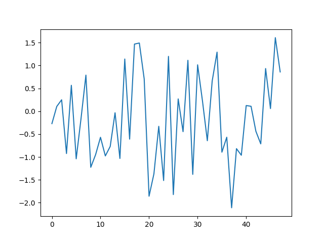

Plotting a time series¶
An example plot of pyts.visualization.plot_ts
import numpy as np
from scipy.stats import norm
from pyts.visualization import plot_ts
# Parameters
n_samples = 100
n_features = 48
rng = np.random.RandomState(41)
delta = 0.5
dt = 1
# Generate a toy dataset
X = (norm.rvs(scale=delta**2 * dt, size=n_samples*n_features, random_state=rng)
.reshape((n_samples, n_features)))
X[:, 0] = 0
X = np.cumsum(X, axis=1)
# Plot the first sample
plot_ts(X[0])
Total running time of the script: ( 0 minutes 0.340 seconds)